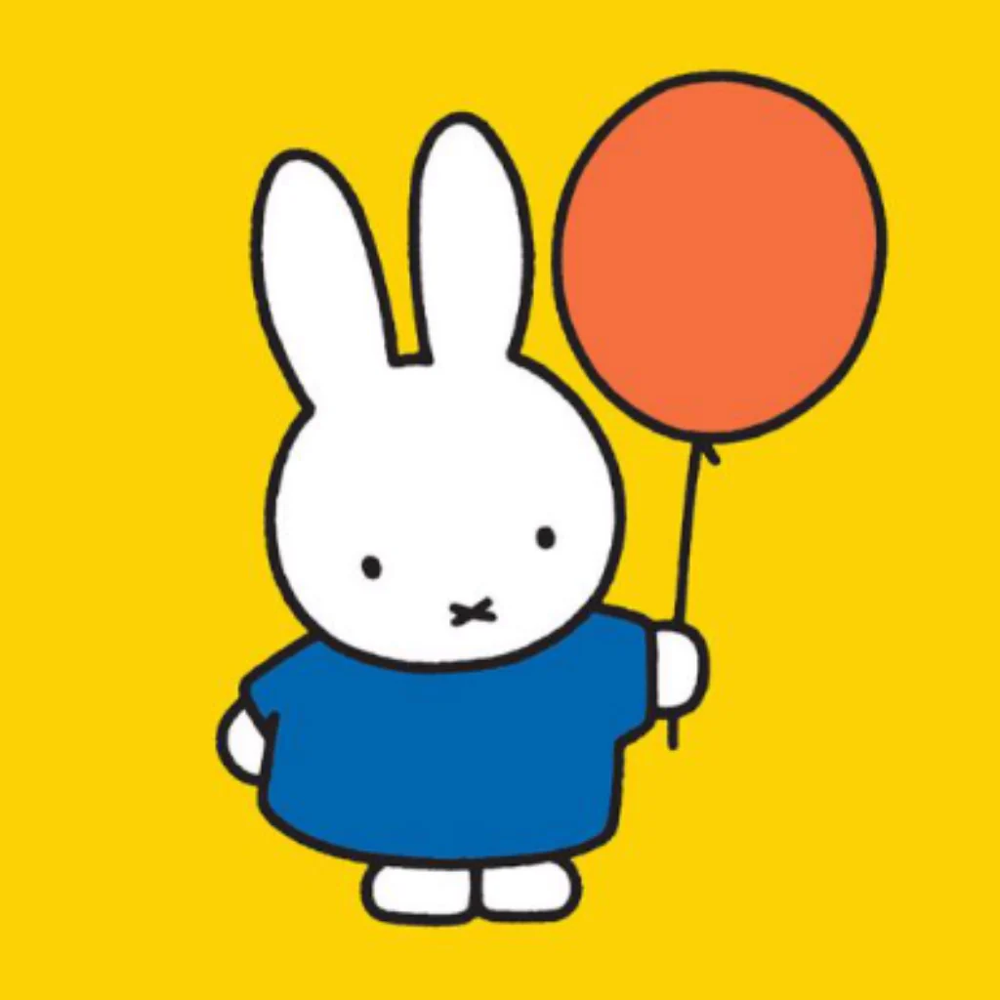

Favorite character: Miffy
why i like this character?
I like this character because I think that Miffy is a very simple and cute character
Biography
- Name: Miffy/Nijintje
- Where the character is from: Miffy is a fictional rabbit appearing in a series of books drawn and written by Dick Bruna.
- when it was created: June 21, 1955;
- Fun fact: MIffy is originally from the Netherlands and is called “Nijntje” which means little rabbit in Dutch.